Basic analysis of 10X example Visium dataset
Lambda Moses
2023-11-30
Source:vignettes/visium_10x.Rmd
visium_10x.RmdIntroduction
In this introductory vignette for SpatialFeatureExperiment
data representation and Voyager
anlaysis package, we demonstrate a basic exploratory data analysis (EDA)
of spatial transcriptomics data. Basic knowledge of R and SingleCellExperiment
is assumed.
This vignette showcases the packages with a Visium spatial gene expression system dataset, downloaded from the 10X website, in the Space Ranger output format. The technology was chosen due to its popularity, and therefore the availability of numerous publicly available datasets for analysis (Moses and Pachter 2022).
While Voyager was developed with the goal of facilitating the use of
geospatial methods in spatial genomics, this introductory vignette is
restricted to non-spatial scRNA-seq EDA with the Visium dataset. There
is another
Visium introductory vignette using a dataset in the SFEData
package but not from the 10X website.
Here we load the packages used in this vignette.
library(Voyager)
library(SpatialExperiment)
library(SpatialFeatureExperiment)
library(SingleCellExperiment)
library(ggplot2)
library(scater)
library(scuttle)
library(scran)
library(stringr)
library(patchwork)
library(bluster)
library(rjson)
theme_set(theme_bw())Here we download the data from the 10X website. This is the unfiltered gene count matrix:
if (!file.exists("visium_ob.tar.gz"))
download.file("https://cf.10xgenomics.com/samples/spatial-exp/2.0.0/Visium_Mouse_Olfactory_Bulb/Visium_Mouse_Olfactory_Bulb_raw_feature_bc_matrix.tar.gz",
destfile = "visium_ob.tar.gz")This is the spatial information:
if (!file.exists("visium_ob_spatial.tar.gz"))
download.file("https://cf.10xgenomics.com/samples/spatial-exp/2.0.0/Visium_Mouse_Olfactory_Bulb/Visium_Mouse_Olfactory_Bulb_spatial.tar.gz",
destfile = "visium_ob_spatial.tar.gz")Decompress the downloaded content:
if (!dir.exists("outs")) {
dir.create("outs")
system("tar -xvf visium_ob.tar.gz -C outs")
system("tar -xvf visium_ob_spatial.tar.gz -C outs")
}This is what the outs directory in Space Ranger output
looks like:
list.dirs("outs")
#> [1] "outs" "outs/raw_feature_bc_matrix"
#> [3] "outs/spatial"In the gene count matrix directory:
list.files("outs/raw_feature_bc_matrix")
#> [1] "barcodes.tsv.gz" "features.tsv.gz" "matrix.mtx.gz"In the spatial directory:
list.files("outs/spatial")
#> [1] "aligned_fiducials.jpg" "detected_tissue_image.jpg"
#> [3] "scalefactors_json.json" "spatial_enrichment.csv"
#> [5] "tissue_hires_image.png" "tissue_lowres_image.png"
#> [7] "tissue_positions.csv"The outputs in the spatial directory is explained here on the 10X website.
The tissue_hires_image.png is a relatively high
resolution image of the tissue, but not full resolution. The
tissue_lowres_image.png file is a low resolution image of
the tissue, suitable for quick plotting, and is shown here: 
The array of dots framing the tissue seen in this image is the
fiducials, used to align the tissue image to the positions of the Visium
spots, so gene expression can be matched to spatial locations. The
alignment of the fiducials is shown in
aligned_fiducials.jpg. Space Ranger can automatically
detect which spots are in tissue, and these spots are highlighted in
detected_tissue_image.jpg.
Inside the scalefactors_json.json file:
fromJSON(file = "outs/spatial/scalefactors_json.json")
#> $tissue_hires_scalef
#> [1] 0.2
#>
#> $tissue_lowres_scalef
#> [1] 0.06
#>
#> $fiducial_diameter_fullres
#> [1] 118.9155
#>
#> $spot_diameter_fullres
#> [1] 73.61433spot_diameter_fullres is the diameter of each Visium
spot in the full resolution H&E image in pixels.
tissue_hires_scalef and tissue_lowres_scalef
are the ratio of the size of the high resolution (but not full
resolution) and low resolution H&E image to the full resolution
image. fiducial_diameter_fullres is the diameter of each
fiducial spot used to align the spots to the H&E image in pixels in
the full resolution image.
The tissue_positions_list.csv file contains information
for the coordinates of the spots in the full resolution image and
whether each spot is in tissue (in_tissue, 1 means yes and
0 means no) as automatically detected by Space Ranger or manually
annotated in the Loupe browser.
head(read.csv("outs/spatial/tissue_positions.csv"))
#> barcode in_tissue array_row array_col pxl_row_in_fullres
#> 1 ACGCCTGACACGCGCT-1 0 0 0 8668
#> 2 TACCGATCCAACACTT-1 0 1 1 8611
#> 3 ATTAAAGCGGACGAGC-1 0 0 2 8554
#> 4 GATAAGGGACGATTAG-1 0 1 3 8498
#> 5 GTGCAAATCACCAATA-1 0 0 4 8441
#> 6 TGTTGGCTGGCGGAAG-1 0 1 5 8384
#> pxl_col_in_fullres
#> 1 1102
#> 2 1200
#> 3 1102
#> 4 1200
#> 5 1102
#> 6 1200The spatial_enrichment.csv file has Moran’s I
(presumably for spots in tissue) and its p-value for each gene that is
detected in at least 10 spots and has at least 20 UMIs.
head(read.csv("outs/spatial/spatial_enrichment.csv"))
#> Feature.ID Feature.Name Feature.Type I P.value
#> 1 ENSMUSG00000001023 S100a5 Gene Expression 0.7709048 0
#> 2 ENSMUSG00000019874 Fabp7 Gene Expression 0.6987346 0
#> 3 ENSMUSG00000002985 Apoe Gene Expression 0.6945210 0
#> 4 ENSMUSG00000025739 Gng13 Gene Expression 0.6585750 0
#> 5 ENSMUSG00000090223 Pcp4 Gene Expression 0.6317032 0
#> 6 ENSMUSG00000053310 Nrgn Gene Expression 0.6033600 0
#> Adjusted.p.value Feature.Counts.in.Spots.Under.Tissue
#> 1 0 9019
#> 2 0 13462
#> 3 0 67509
#> 4 0 5260
#> 5 0 45118
#> 6 0 10723
#> Median.Normalized.Average.Counts Barcodes.Detected.per.Feature
#> 1 15.848669 1021
#> 2 20.679932 1170
#> 3 76.635169 1184
#> 4 8.803694 1050
#> 5 25.811125 1133
#> 6 6.075966 898Here we read the Space Ranger output into R as an SFE object:
(sfe <- read10xVisiumSFE(samples = ".", type = "sparse", data = "raw"))
#> class: SpatialFeatureExperiment
#> dim: 32285 4992
#> metadata(0):
#> assays(1): counts
#> rownames(32285): ENSMUSG00000051951 ENSMUSG00000089699 ...
#> ENSMUSG00000095019 ENSMUSG00000095041
#> rowData names(8): symbol Feature.Type ...
#> Median.Normalized.Average.Counts_sample01
#> Barcodes.Detected.per.Feature_sample01
#> colnames(4992): AAACAACGAATAGTTC-1 AAACAAGTATCTCCCA-1 ...
#> TTGTTTGTATTACACG-1 TTGTTTGTGTAAATTC-1
#> colData names(4): in_tissue array_row array_col sample_id
#> reducedDimNames(0):
#> mainExpName: NULL
#> altExpNames(0):
#> spatialCoords names(2) : pxl_col_in_fullres pxl_row_in_fullres
#> imgData names(4): sample_id image_id data scaleFactor
#>
#> unit: full_res_image_pixel
#> Geometries:
#> colGeometries: spotPoly (POLYGON)
#>
#> Graphs:
#> sample01:Quality control (QC)
is_mt <- str_detect(rowData(sfe)$symbol, "^mt-")
sfe <- addPerCellQCMetrics(sfe, subsets = list(mito = is_mt))
names(colData(sfe))
#> [1] "in_tissue" "array_row" "array_col"
#> [4] "sample_id" "sum" "detected"
#> [7] "subsets_mito_sum" "subsets_mito_detected" "subsets_mito_percent"
#> [10] "total"The mouse olfactory bulb is conventionally plotted horizontally. The entire SFE object can be transposed in histologial space to make the olfactory bulb horizontal.
sfe <- SpatialFeatureExperiment::transpose(sfe)
plotSpatialFeature(sfe, c("sum", "detected", "subsets_mito_percent"),
image_id = "lowres", maxcell = 5e4, ncol = 2)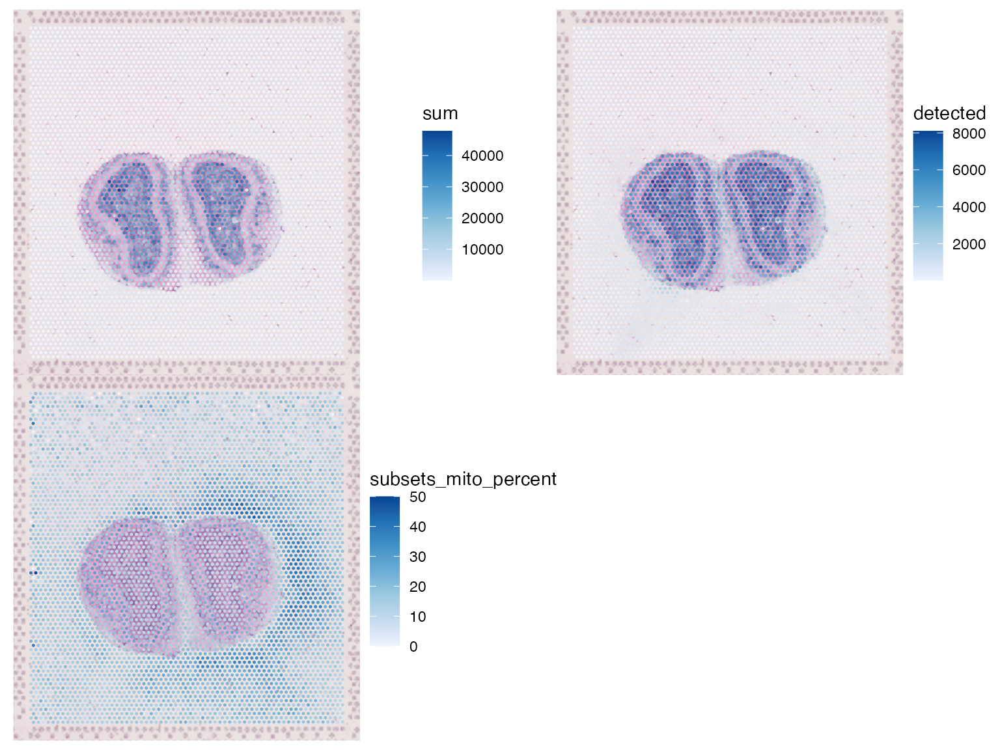
Percentage of mitochondrial counts in spots outside tissue is higher near the tissue, especially on the left.
plotColData(sfe, "sum", x = "in_tissue", color_by = "in_tissue") +
plotColData(sfe, "detected", x = "in_tissue", color_by = "in_tissue") +
plotColData(sfe, "subsets_mito_percent", x = "in_tissue", color_by = "in_tissue") +
plot_layout(guides = "collect")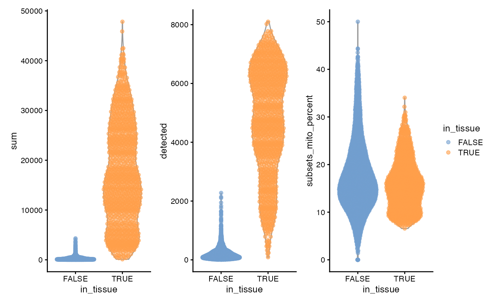
3 peaks, apparently histologically relevant. Also no obvious outliers.
plotColData(sfe, x = "sum", y = "subsets_mito_percent", color_by = "in_tissue") +
geom_density_2d()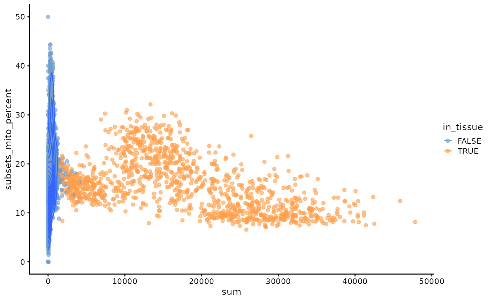
This is unlike scRNA-seq data. Spots not in tissue have a wide range of mitocondrial percentage. Spots in tissue fall into 3 clusters in this plot, seemingly related to histological regions.
sfe_tissue <- sfe[,sfe$in_tissue]
plotColData(sfe_tissue, x = "sum", y = "detected", bins = 75)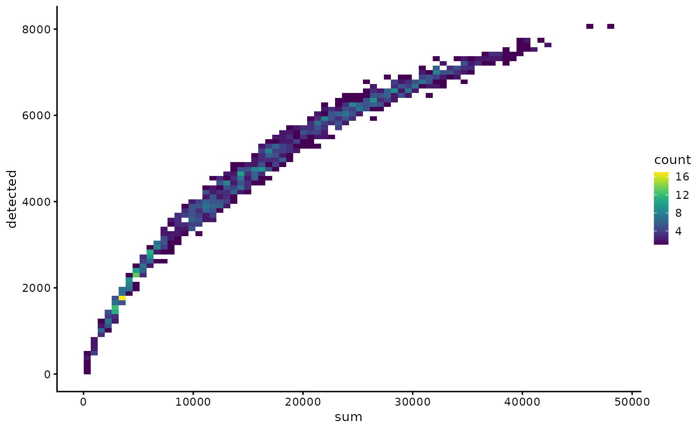
#clusters <- quickCluster(sfe_tissue)
#sfe_tissue <- computeSumFactors(sfe_tissue, clusters=clusters)
#sfe_tissue <- sfe_tissue[, sizeFactors(sfe_tissue) > 0]
sfe_tissue <- logNormCounts(sfe_tissue)
dec <- modelGeneVar(sfe_tissue, lowess = FALSE)
hvgs <- getTopHVGs(dec, n = 2000)Dimension reduction and clustering
sfe_tissue <- runPCA(sfe_tissue, ncomponents = 30, subset_row = hvgs,
scale = TRUE) # scale as in Seurat
ElbowPlot(sfe_tissue, ndims = 30)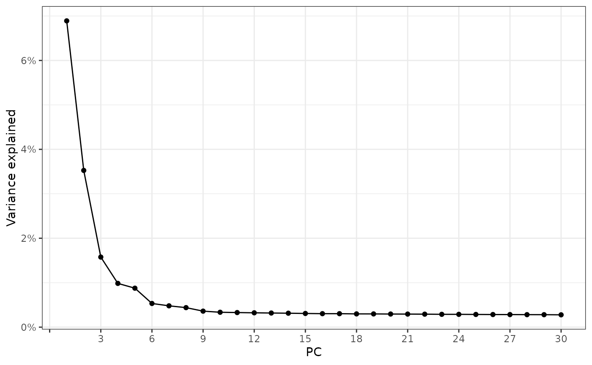
names(rowData(sfe_tissue))
#> [1] "symbol"
#> [2] "Feature.Type"
#> [3] "I_sample01"
#> [4] "P.value_sample01"
#> [5] "Adjusted.p.value_sample01"
#> [6] "Feature.Counts.in.Spots.Under.Tissue_sample01"
#> [7] "Median.Normalized.Average.Counts_sample01"
#> [8] "Barcodes.Detected.per.Feature_sample01"
plotDimLoadings(sfe_tissue, dims = 1:5, swap_rownames = "symbol", ncol = 3)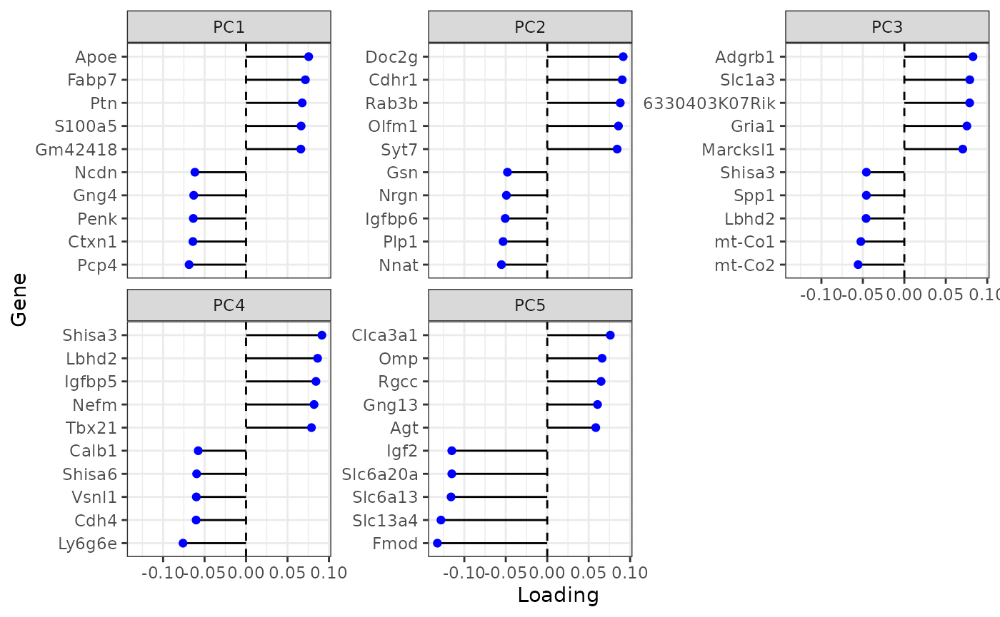
Do the clustering to show on the dimension reduction plots
set.seed(29)
colData(sfe_tissue)$cluster <- clusterRows(reducedDim(sfe_tissue, "PCA")[,1:3],
BLUSPARAM = SNNGraphParam(
cluster.fun = "leiden",
cluster.args = list(
resolution_parameter = 0.5,
objective_function = "modularity")))
plotPCA(sfe_tissue, ncomponents = 5, colour_by = "cluster")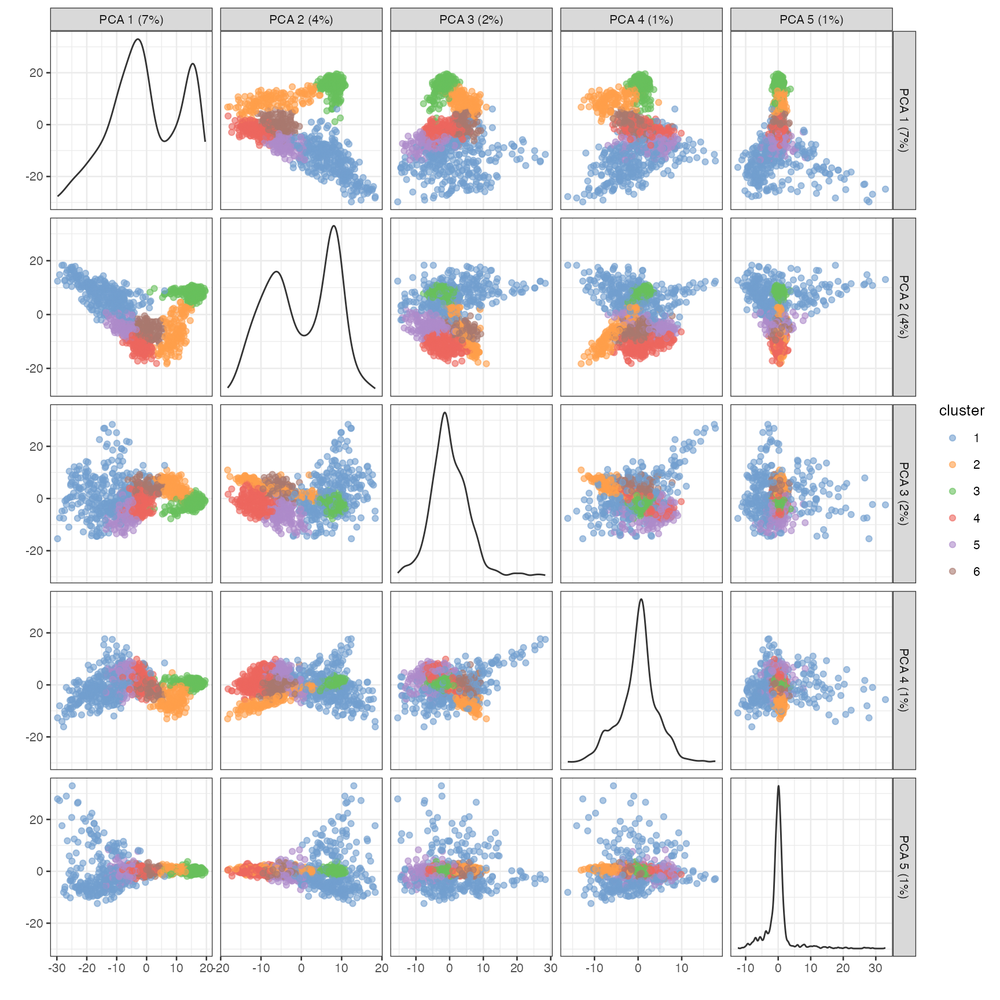
plotSpatialFeature(sfe_tissue, features = "cluster",
colGeometryName = "spotPoly", image_id = "lowres")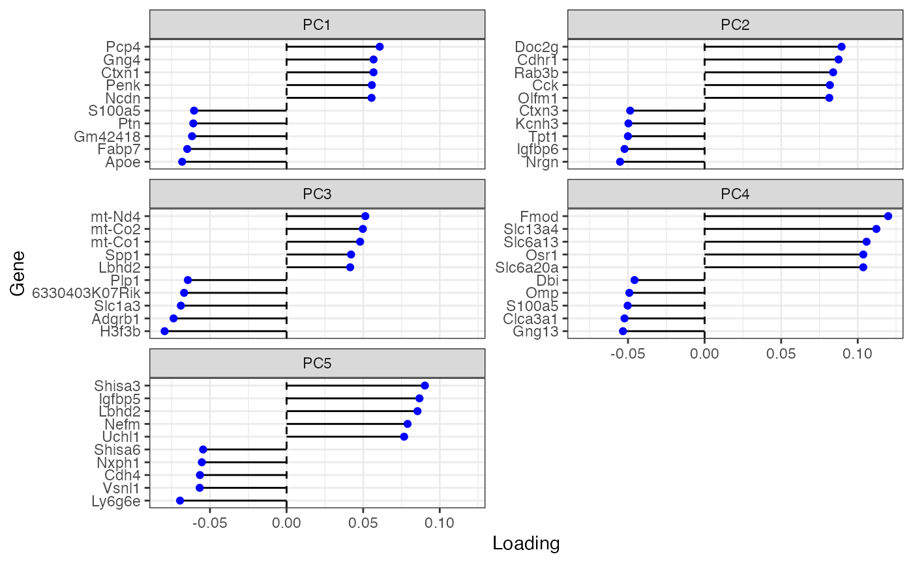
spatialReducedDim(sfe_tissue, "PCA", ncomponents = 5,
colGeometryName = "spotPoly", divergent = TRUE,
diverge_center = 0, ncol = 2,
image_id = "lowres", maxcell = 5e4)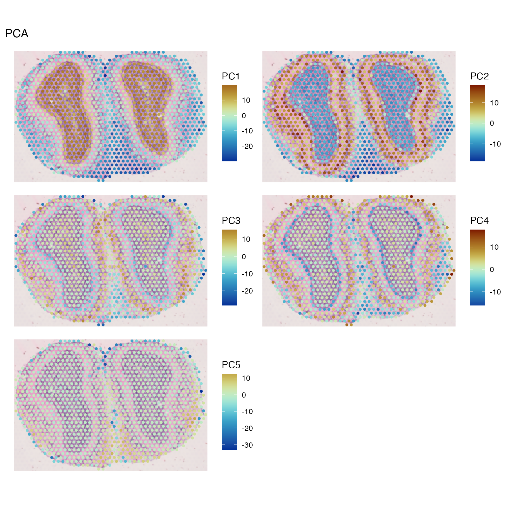
markers <- findMarkers(sfe_tissue, groups = colData(sfe_tissue)$cluster,
test.type = "wilcox", pval.type = "all", direction = "up")Significant markers for each cluster can be obtained as follows:
genes_use <- vapply(markers, function(x) rownames(x)[1], FUN.VALUE = character(1))
plotExpression(sfe_tissue, rowData(sfe_tissue)[genes_use, "symbol"], x = "cluster",
colour_by = "cluster", swap_rownames = "symbol")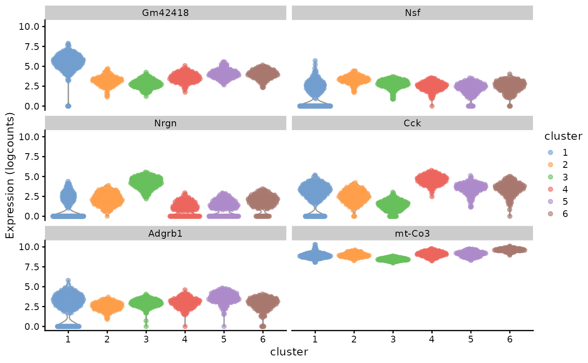
These genes are interesting to view in spatial context:
plotSpatialFeature(sfe_tissue, genes_use, colGeometryName = "spotPoly", ncol = 2,
swap_rownames = "symbol", image_id = "lowres", maxcell = 5e4)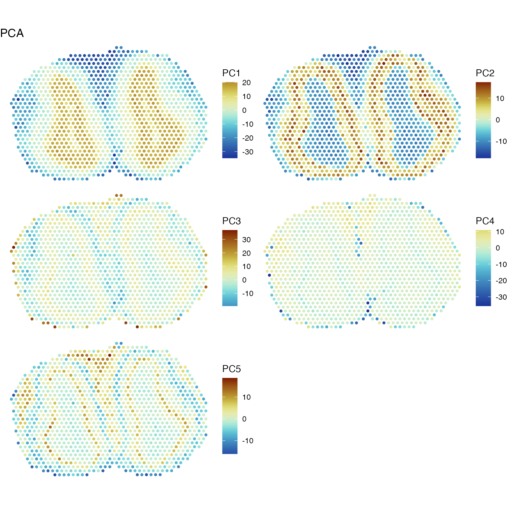
More spatial analyses on this dataset is performed in an “advanced” version of this vignette.
Session info
sessionInfo()
#> R version 4.3.2 (2023-10-31)
#> Platform: x86_64-apple-darwin20 (64-bit)
#> Running under: macOS Ventura 13.6
#>
#> Matrix products: default
#> BLAS: /Library/Frameworks/R.framework/Versions/4.3-x86_64/Resources/lib/libRblas.0.dylib
#> LAPACK: /Library/Frameworks/R.framework/Versions/4.3-x86_64/Resources/lib/libRlapack.dylib; LAPACK version 3.11.0
#>
#> locale:
#> [1] en_US.UTF-8/en_US.UTF-8/en_US.UTF-8/C/en_US.UTF-8/en_US.UTF-8
#>
#> time zone: UTC
#> tzcode source: internal
#>
#> attached base packages:
#> [1] stats4 stats graphics grDevices utils datasets methods
#> [8] base
#>
#> other attached packages:
#> [1] rjson_0.2.21 bluster_1.12.0
#> [3] patchwork_1.1.3 stringr_1.5.1
#> [5] scran_1.30.0 scater_1.30.0
#> [7] scuttle_1.12.0 ggplot2_3.4.4
#> [9] SpatialFeatureExperiment_1.3.0 SpatialExperiment_1.12.0
#> [11] SingleCellExperiment_1.24.0 SummarizedExperiment_1.32.0
#> [13] Biobase_2.62.0 GenomicRanges_1.54.1
#> [15] GenomeInfoDb_1.38.1 IRanges_2.36.0
#> [17] S4Vectors_0.40.2 BiocGenerics_0.48.1
#> [19] MatrixGenerics_1.14.0 matrixStats_1.1.0
#> [21] Voyager_1.4.0
#>
#> loaded via a namespace (and not attached):
#> [1] RColorBrewer_1.1-3 jsonlite_1.8.7
#> [3] wk_0.9.0 magrittr_2.0.3
#> [5] ggbeeswarm_0.7.2 magick_2.8.1
#> [7] farver_2.1.1 rmarkdown_2.25
#> [9] fs_1.6.3 zlibbioc_1.48.0
#> [11] ragg_1.2.6 vctrs_0.6.4
#> [13] spdep_1.3-1 memoise_2.0.1
#> [15] DelayedMatrixStats_1.24.0 RCurl_1.98-1.13
#> [17] terra_1.7-55 htmltools_0.5.7
#> [19] S4Arrays_1.2.0 BiocNeighbors_1.20.0
#> [21] Rhdf5lib_1.24.0 s2_1.1.4
#> [23] SparseArray_1.2.2 rhdf5_2.46.0
#> [25] sass_0.4.7 spData_2.3.0
#> [27] KernSmooth_2.23-22 bslib_0.6.0
#> [29] desc_1.4.2 cachem_1.0.8
#> [31] igraph_1.5.1 lifecycle_1.0.4
#> [33] pkgconfig_2.0.3 rsvd_1.0.5
#> [35] Matrix_1.6-3 R6_2.5.1
#> [37] fastmap_1.1.1 GenomeInfoDbData_1.2.11
#> [39] digest_0.6.33 colorspace_2.1-0
#> [41] ggnewscale_0.4.9 rprojroot_2.0.4
#> [43] dqrng_0.3.1 RSpectra_0.16-1
#> [45] irlba_2.3.5.1 textshaping_0.3.7
#> [47] beachmat_2.18.0 labeling_0.4.3
#> [49] fansi_1.0.5 abind_1.4-5
#> [51] compiler_4.3.2 proxy_0.4-27
#> [53] withr_2.5.2 BiocParallel_1.36.0
#> [55] viridis_0.6.4 DBI_1.1.3
#> [57] highr_0.10 R.utils_2.12.3
#> [59] HDF5Array_1.30.0 MASS_7.3-60
#> [61] DelayedArray_0.28.0 classInt_0.4-10
#> [63] tools_4.3.2 units_0.8-4
#> [65] vipor_0.4.5 beeswarm_0.4.0
#> [67] R.oo_1.25.0 glue_1.6.2
#> [69] rhdf5filters_1.14.1 grid_4.3.2
#> [71] sf_1.0-14 cluster_2.1.4
#> [73] generics_0.1.3 isoband_0.2.7
#> [75] gtable_0.3.4 R.methodsS3_1.8.2
#> [77] class_7.3-22 metapod_1.10.0
#> [79] BiocSingular_1.18.0 ScaledMatrix_1.10.0
#> [81] sp_2.1-2 utf8_1.2.4
#> [83] XVector_0.42.0 ggrepel_0.9.4
#> [85] pillar_1.9.0 limma_3.58.1
#> [87] dplyr_1.1.4 lattice_0.22-5
#> [89] deldir_2.0-2 tidyselect_1.2.0
#> [91] locfit_1.5-9.8 knitr_1.45
#> [93] gridExtra_2.3 edgeR_4.0.2
#> [95] xfun_0.41 statmod_1.5.0
#> [97] DropletUtils_1.22.0 stringi_1.8.2
#> [99] yaml_2.3.7 boot_1.3-28.1
#> [101] evaluate_0.23 codetools_0.2-19
#> [103] tibble_3.2.1 cli_3.6.1
#> [105] systemfonts_1.0.5 munsell_0.5.0
#> [107] jquerylib_0.1.4 Rcpp_1.0.11
#> [109] parallel_4.3.2 pkgdown_2.0.7
#> [111] sparseMatrixStats_1.14.0 bitops_1.0-7
#> [113] viridisLite_0.4.2 scales_1.2.1
#> [115] e1071_1.7-13 purrr_1.0.2
#> [117] crayon_1.5.2 scico_1.5.0
#> [119] rlang_1.1.2 cowplot_1.1.1